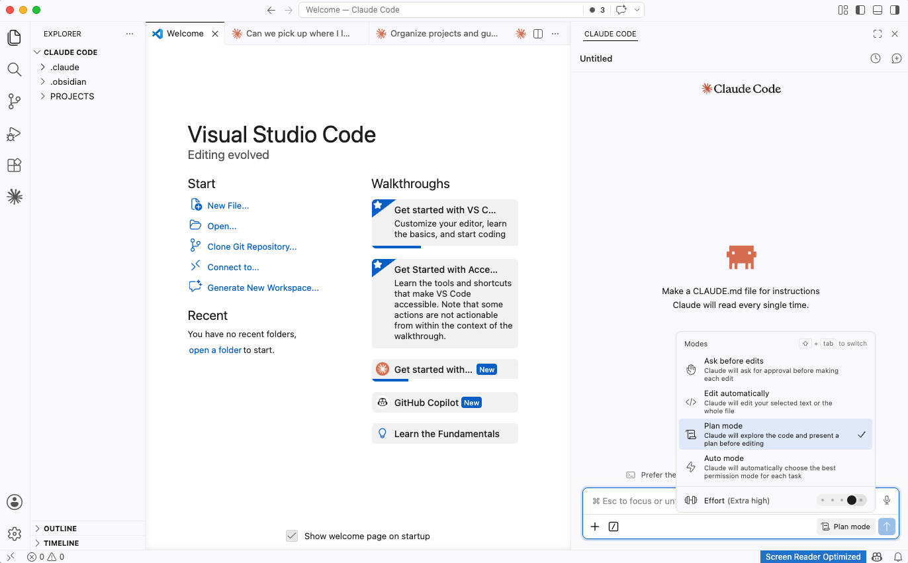

Everything in this guide happens on your laptop or desktop. Your phone is great for quick AI conversations on the go, but your real workspace lives on your computer.
The guide looks long because it includes prompts you can copy and paste directly. If you already have clarity on your brand, voice, and business, you'll fly through it. If the foundation section takes you longer because you're really thinking through your answers, that's a good thing. That thinking is what makes Claude work well for you.
The point of this system is that you stop re-explaining yourself. You build the foundation once. Every conversation after that starts with everything Claude needs to know about you, your client, and your business already loaded.
Claude is an AI made by Anthropic. You talk to it like a person, and it helps you think, write, plan, and build. On its own, it's good but generic. It doesn't know your voice, your audience, or your business.
That changes when you give it a foundation. Four small files that tell Claude who you are, who you serve, what your business does, and how you want it to write. Once those files exist, Claude stops sounding like a robot and starts sounding like you.
If you've poked around online, you've probably seen Claude in a few different forms. Here's what's out there, in plain English:
You need Claude Code. That's what this guide will set you up with.
I'm going to be honest with you. I spent over 50 hours in the last two weeks trying different AI tools, different setups, and different approaches. I went down rabbit holes. I set up systems I didn't need. I followed frameworks that were more complicated than necessary.
What I landed on was much simpler than where I started. The foundation files are essential. They're what make Claude genuinely useful for your specific business. But the path to get there doesn't need to be 50 hours. It needs to be about one.
This guide is the shortcut I wish I'd had.
I had the same thought before I started. My experience has been the opposite. Claude learned how I think and how I talk, and it handles the stuff that used to eat up my time. Because of that, I'm spending more of my energy on mentorship calls, creating content from my real life experiences, and learning new skills. I've never felt more in my zone of genius. AI didn't replace my voice. It gave me the space to actually use it.
The thinking underneath this guide draws from Ruben Hassid's writing on setting up Claude for non-developers. If you want more depth, his Claude Code walkthrough is at ruben.substack.com/p/claude-code, and his structured Claude guides (beginner to expert, all free) live at claude101.com.
You'll be working inside two tools that snap together: VS Code (your workspace) and Claude Code (an extension that adds Claude to it).
VS Code is a free app from Microsoft. Think of it as your workspace: a window with your files and folders on the left, and a main editing area in the middle. Most software developers use it daily. You will not be using it like a developer. You will use it as a clean, organized place where your files live.
Claude Code is a free extension you install inside VS Code. Once installed, it adds a chat panel where you talk to Claude. Claude can read every file in your workspace, create new files, edit existing ones, and run things for you, all while you watch.
Two products. One window. You don't need to switch between apps or modes. Everything happens here.
If the word "code" makes you nervous, let me reframe it. You will never write code. You describe what you want in plain English. Claude builds it. You review it and say yes or no. It's the same skill as reviewing a team member's work.
The people who are best at this aren't programmers. They're people who can describe what they want clearly and give good feedback. If you can manage a team, you can do this.
Fifteen minutes. Do these three steps on your computer before anything else.
Go to claude.ai and sign up. Use the same email you use for Google so future integrations stay seamless. Upgrade to Pro ($20/month) for full access. Pro includes Claude Code in VS Code at no extra cost.
VS Code is your workspace. It's a free app from Microsoft.
This is the piece that adds Claude to VS Code.
Once your Claude account is set up, download the Claude app on iOS or Android. It's great for quick questions on the go, voice-dictating thoughts while you're out with the kids, or casual conversations away from your desk. Your real workspace lives on your computer in VS Code, but the phone app is a handy companion.
One main folder. A few subfolders inside. That's your entire file structure. The folder system is what makes Claude consistent across every conversation, because Claude can see exactly where everything lives.
On your computer, create one main folder called Claude. Put it somewhere local like your Desktop or Documents folder. Inside, create two subfolders.
In VS Code, go to File → Open Folder and select your Claude folder. You should see your ABOUT ME and PROJECTS folders in the file tree on the left side of the screen. This is your home base.
VS Code can look overwhelming the first time you open it. There's more visible chrome than most apps you've used: icon strips, panels, menus. Here's what you're actually looking at, and what you can ignore.

The numbers in the image match this breakdown:
| What you see | What it does | Do you need it now? |
|---|---|---|
| Activity bar (far left, vertical icons) | The strip of icons on the very left edge. The top one (looks like papers stacked) shows your file tree. The Extensions icon (four squares) is where you installed Claude Code. Most other icons can be ignored at first. | Just the file tree icon. Ignore the rest for now. |
| File tree (next to the activity bar) | Shows all your folders and files. Click any file to open and read it. This is where your ABOUT ME folder, PROJECTS, and CLAUDE.md live. | Yes. This is your home base. |
| Editor (center) | This is where files open when you click them. Useful for reading and editing files directly. Claude can do most editing for you, so you can mostly leave this alone at first. | Not yet. You'll glance at it as Claude makes changes. |
| Claude Code panel (right side or bottom) | Where you talk to Claude. Type your message, hit enter. Claude can read your files, create new ones, and build things from here. | Yes. This is where all the work happens. |
| Everything else | Status bar, search, source control, debug. These are for more advanced use. | No. Ignore it all for now. You'll discover these naturally as you need them. |
When I first opened VS Code, I didn't know where to click. There were a lot more icons and panels than I expected. I spent the first session just talking to Claude about my setup and exploring. Within about 20 minutes, the two panels that matter (file tree plus Claude chat) felt natural. Everything else faded into the background. Give yourself that same grace.
If you've heard people talk about the terminal, it's a panel at the bottom of VS Code. You can open it any time via View → Terminal (or close it the same way). Claude uses it on your behalf when it needs to run things. You don't need to worry about it.
Your path into the foundation work depends on where you're coming from. Pick whichever card fits you.
You're in the right place. The cards below are for people bringing existing AI history with them, so you can skip them entirely. Read Section 05 next (a quick safety habit), then go straight to Section 06 to build your four core files. Block 30 to 45 minutes for the four files.
Don't lose that work. Open ChatGPT and run the four extraction prompts in the box below. Copy the responses, save them in one document, and paste them into Claude Code (in VS Code) when Claude starts interviewing you. Tell Claude: "Here's context from my time using ChatGPT. Use this to draft my foundation files. Only ask me about gaps you can't fill from this material."
Claude chat remembers across conversations. Open one fresh thread and run the same four extraction prompts above. Everything it knows about you will come through in a single session. Bring those responses into Claude Code in VS Code.
Copy your existing ABOUT ME files directly into your new Claude/ABOUT ME folder. You can skip Section 06 entirely. Move on to Section 07.
Open Claude Cowork and run the same four extraction prompts above (the ones in the ChatGPT card). Cowork will summarize everything it knows about you in one session. Bring those responses into Claude Code in VS Code.
Before you do anything else in Claude Code, learn this one habit. It's the single most important section in this guide for non-developers.
Plan Mode works like this: you describe what you want, Claude writes a plan, you read it and approve it. Only then does Claude build anything. Nothing happens without your approval.
You're not handing the keys over to AI. You're reviewing work before it ships, the same way you'd review a team member's draft before sending it out.
If you're nervous about AI doing something unexpected, Plan Mode is the answer. Claude will always show you what it's about to do first. If something doesn't look right, say "change this part" or "stop, let's rethink." You're the boss. Claude is the builder who checks with you before every move.
Once Claude shows you a plan, you have a few ways to respond. You don't have to be precious about it. Pick whichever feels easier in the moment:
None of this is one-shot. You'll usually go back and forth a few times before the plan is right, and that's the point. The back and forth is the work.
You'll turn Plan Mode on at the very start of the next section, when you sit down to build your four core files. The exact keys are right there in the prep block.
These four files are the foundation. They live in your ABOUT ME folder. Claude reads all four before every task you give it. This is the single most important part of the entire setup.
The four prompts below interview you in detail. Most of us type at about 60 words per minute. We speak at 150. Speaking your answers gets you through faster, and your ideas come out fuller, more like you.
Wispr Flow is a voice-to-text tool that runs in the background on your computer. Hold a key, talk, release. Your words appear wherever your cursor is, including inside the Claude Code chat panel.
Go to wispr.ai to download. Free tier covers 2,000 words/week, enough to know if you'll love it.
This part takes about 30 to 45 minutes. Set yourself up first:
These four files shape every output you'll get from Claude going forward. An hour now saves you hundreds later.
Your CLAUDE.md is the brain. It's the one file Claude reads before every single conversation. It tells Claude where your foundation lives and how you want to work. Think of it as your standing instructions to a new team member on their first day.
You don't need to create this file by hand. Stay in your Claude Code conversation and paste the prompt below. Claude will build the file at the right location with the right contents. (Plan Mode should still be on, so you'll review the plan before Claude writes the file.)
Some tools store your instructions in a settings panel where you can't see them while you work. CLAUDE.md lives in your file tree. You can open it, read it, and edit it anytime. It doesn't silently revert or disappear. It's just a file, visible and reliable.
As you start projects and build workflows, you'll add lines to your CLAUDE.md. Maybe a list of active projects, a reminder about your tone preferences, or a link to a template. For now, what Claude built is all you need. To update it, just say: "Update my CLAUDE.md to also mention X."
Your foundation is built. Your instructions are set. Plan Mode is in your hands. Now you actually use it. This section covers how to verify everything is wired up, how to start each session, and how to keep things sharp over time.
Before you dive into using your setup day to day, run this one prompt to confirm everything is wired up:
If Claude reads back a clear, accurate picture of you and your business, you're good. If something looks off, this is the moment to catch it. Tell Claude what to fix and Plan Mode will walk you through the edit.
Every time you open VS Code and start a new Claude Code conversation, Claude reads your CLAUDE.md automatically. That means it already knows your foundation. You don't need to re-explain yourself.
Start with what you need. Here are some common session openers:
| What you're doing | What to say |
|---|---|
| Starting a new project | "I'm starting a new project called [name]. Create a folder for it in PROJECTS with a CLAUDE.md that describes the scope. Here's what I need it to do..." |
| Working on an existing project | "Read the CLAUDE.md in my [project name] folder. Let's pick up where we left off." |
| Quick one-off task | "I need a quick [draft/outline/review/calculation]. No project folder needed. Here's the context..." |
| Content writing | "Read my foundation files and draft [type of content] for [audience/channel]. Match my voice. I'll edit from there." |
| Strategy or brainstorm | "I'm thinking through [topic]. Help me work through this. Ask me questions before jumping to solutions." |
When Claude asks you to go do something manually ("go check your settings" or "open that file and paste it here"), push back. Say: "Can you do that yourself?" More often than not, it can. You're training it to use its tools instead of making you the messenger.
Once a week, spend 5 minutes keeping your foundation current. The simplest way is to let Claude run the check-in for you. Open a fresh Claude Code conversation, make sure Plan Mode is on, and paste the prompt below.
Claude reads your foundation files at the start of each conversation. If your files get long, that uses more of your conversation budget. The targets in the prompt above keep things lean. Sharpen your files weekly, don't pile on.
Bookmark this section. It's the answer key when something feels off.
| File | What it covers |
|---|---|
| about-me.md | Who you are, how you work, your standards, what you avoid. |
| ideal-client.md | Who you serve. Their language, their fears, what they want. |
| my-company.md | Goals, current focus, what you're saying no to. |
| anti-ai-writing-style.md | Words and patterns Claude must not use when writing as you. |
| What you're seeing | Where to look |
|---|---|
| Claude's writing sounds generic, not like you | Update anti-ai-writing-style.md. Add the specific patterns or words you're seeing that don't match your voice. |
| Claude asks obvious questions you've already answered | Check that your CLAUDE.md is at the top level of your Claude folder (not inside ABOUT ME or PROJECTS). Re-open the workspace if you've moved things around. |
| Claude doesn't know about a recent decision or pivot | Update my-company.md. The foundation files are read at the start of every session, so changes land immediately. |
| Claude went off and did something you didn't approve | You weren't in Plan Mode. Press Shift + Tab in the chat panel until Plan Mode is on. From now on, toggle it on at the start of any non-trivial task. |
| Claude can't find a file | Check the file is actually in your VS Code workspace folder. The file tree on the left shows what Claude can see. If it's not in the tree, it's not in the workspace. |
| Everything just feels off suddenly | Open your CLAUDE.md and your four ABOUT ME files. Make sure nothing's blank or accidentally truncated. If they look fine, start a fresh Claude Code conversation. Sometimes a session just needs a reset. |
| The conversation feels heavy or Claude is slowing down | Conversations have a memory budget. The longer one runs, the more of that budget gets used. If a session has been going for hours and dozens of messages, start a fresh one. One task per conversation is a good habit. Claude reads your CLAUDE.md and ABOUT ME files at the start of every new session, so you don't lose context, just chat history. |
If you have content, scripts, brand guidelines, or any other working material from before this setup, you can bring them in. Claude does the audit. You decide what to keep.
Once your foundation files are built and your CLAUDE.md is set, open a fresh Claude Code conversation, make sure Plan Mode is on, and run this:
Because you're in Plan Mode, Claude shows you exactly what it's about to do (which files to bring in, where to put them, what to name them) before touching anything. You approve, adjust, or stop.
If you have brand colors, fonts, a logo system, or a brand guide of any kind, give Claude a place for them so they're available to every future project. Run this prompt:
This single move saves hours later when you're generating mockups, slide decks, or social graphics. Claude will already know your palette and fonts.
When you start automating, you'll connect Claude to other tools (Google Drive, Meta Ads, your email service, your CRM). Each tool gives you an API key, which is basically a password Claude uses to log in for you. API keys never live in plain text. Doppler is a free vault for those keys.
If an API key ends up in a file you save to GitHub, anyone can find it. Even private repos leak. The convention is simple: keys live in a separate vault, scripts ask the vault for them at runtime, and the keys never appear in your code.
Go to doppler.com and create a free account. The free tier covers everything you'll need.
Open Claude Code and say: "Install the Doppler CLI on my Mac and walk me through logging in." Claude will run the install commands and tell you what to click.
In your Doppler dashboard, create one project (something like my-automations). Inside, paste each API key with a clear name in all caps (e.g., META_ACCESS_TOKEN, GHL_API_KEY). Doppler keeps them encrypted.
When Claude builds an automation script, it will run it through Doppler. The pattern looks like: doppler run -- python3 my_script.py. The keys flow in at runtime. They never live in your code.
Not into Claude Code, not into ChatGPT, not into Slack, not anywhere. If a key ends up in a chat log, treat it as compromised and rotate it immediately: delete the old one in the tool's dashboard, generate a new one, paste the new one into Doppler.
To make this a hard rule that Claude follows from now on, run this prompt in a fresh Claude Code conversation with Plan Mode on:
This is where Claude goes from assistant to builder.
As two quick examples, here's what I just recently built that's already saving me time:
Both started as "this part of my week is eating me alive." That's the right starting point for any automation project.
Same principle as everything else: you describe what you want, Claude writes a plan, you approve, only then does Claude build. Plan Mode (Section 05) is non-negotiable here. If you can review a plan and say "yes, do that" or "no, change this part," you can automate anything.
The single best thing you can do for any automation project is front-load context before you hit execute. Tell Claude everything about the task, your standards, edge cases, the tools involved, what success looks like, what failure looks like. Go back and forth in plan mode. Ask Claude what else it needs from you. Don't rush to build.
And tell Claude to be resourceful. If it asks you to go check something or paste a file, push back. Most of the time it can do that itself. The more you train that habit early, the less you become the messenger.
Time spent on the plan is the cheapest part of the project. Time spent fixing bad output is the most expensive.
Something you do every week that follows the same steps. Sending a batch of emails. Formatting a report. Pulling data from one place and putting it in another.
Open a fresh Claude Code conversation with Plan Mode on. Paste this:
Claude will show you a plan. Read it. If something doesn't make sense, ask about it. If you want changes, say so. When it looks right, tell Claude to build it.
Run the automation. Check the output. If something needs adjusting, tell Claude what to fix. Most automations need 2 to 3 rounds of refinement before they're solid.
Automation handles 90% of the grunt work. You still do the creative pass, the final review, the human judgment call. This isn't about replacing you. It's about freeing you up to do the work that actually requires you.
If you have any feedback on this guide, let me know. We're all learning together.
I believe in you.
🫶 Marina